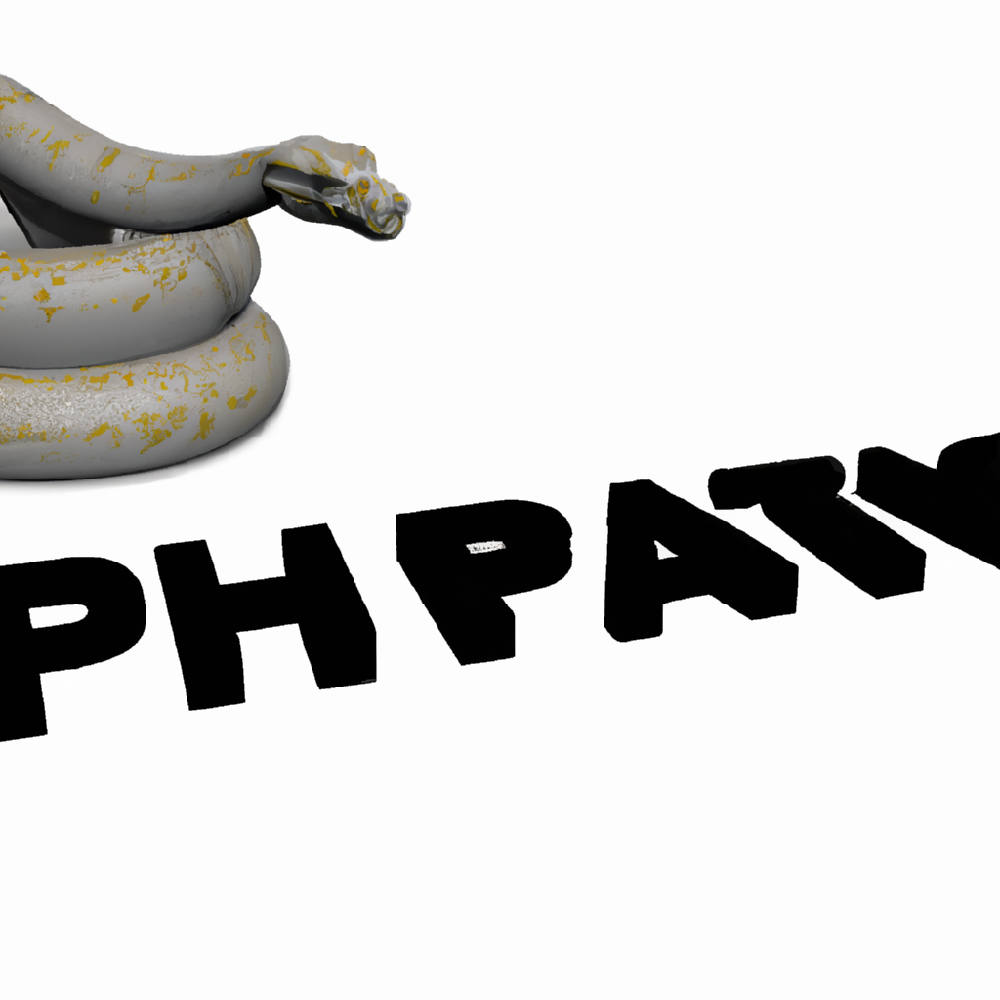

The future of Python and AI
Python is becoming more and more prevalent in today's world, and for good reason. It's simple and easy to learn, and can be used to develop powerful applications and algorithms. With the rise of artificial intelligence, Python is becoming increasingly important for powering machine learning and AI applications.
Python is used to create models and algorithms that can learn from data, identify patterns, and make predictions. This makes it ideal for tasks such as image recognition, natural language processing, and autonomous systems. With the right tools, Python can also be used to develop generative AI applications. Generative AI can create new data or ideas that are not present in the original dataset. For example, it can be used to create new images, music, or text.
The potential for what Python can do with AI is immense, and it is only beginning to be explored. Python is already being used to power many advanced applications, and as the technology progresses, more and more applications will be developed. Python will be key in helping to make AI accessible to everyone, from small businesses to large corporations.
By combining Python and AI, the possibilities for the future are endless. With the right tools and knowledge, Python can help create a world of powerful and intelligent applications that can automate mundane tasks, make decisions, and provide insights. As this technology advances, Python will become an even more powerful tool for developers and businesses alike.